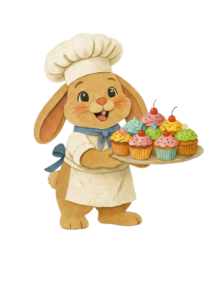

Sofís Sweet BitesEn nuestro sitio encontrarás una deliciosa variedad de Cup Cakes para satisfacer tus antojos dulces. Desde los clásicos sabores de vainilla y chocolate, hasta combinaciones más creativas como red velvet, zanahoria, y oreo. Nuestros Cup Cakes están hechos con ingredientes de alta calidad y decorados con esmero para ofrecerte una experiencia dulce y visualmente atractiva.